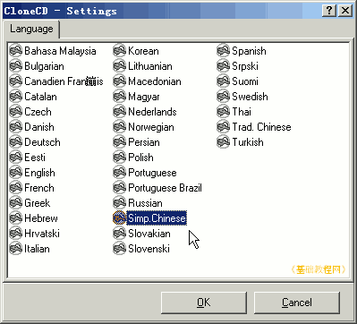

光盘刻录基础教程
作者：TeliuTe 来源：基础教程网
有了刻录机，就可以使用刻录软件来刻录光碟，下面我们来看一个练习；
1、下载和安装
1）单独的刻录机一般随机附带刻录软件，安装好以后就可以直接使用；
2）也可以自己下载刻录软件，CloneCD 华军下载：
3）双击运行下载的安装包，首先是许可协议，点我接受“I Agree”；
4）接下来的组件选择中，点下一步“Next”继续；
5）接下来的安装位置，点安装“Install”；
6）稍等完成安装，如果有安全提示，点“是”继续，
完成安装后提示重启动，点“是”，重新启动计算机；
2、运行刻录软件
1）双击桌面上的图标 ，运行CloneCD，首先出来语言选择对话框，选择简体中文(Simp.Chinese)，然后点“OK”继续；
，运行CloneCD，首先出来语言选择对话框，选择简体中文(Simp.Chinese)，然后点“OK”继续；

2）然后出来一个使用规范，合法使用刻录软件，点我接受“I Agree”；
3）然后出来一个提示对话框，CloneCD 是共享软件，可以试用21天，点“试用一下”继续；
4）CloneCD 的主窗口很简单，只有四个按钮，鼠标指上去会有提示，
分别是制作映像、刻录映像、复制光盘、擦除光盘；
5）有些刻录软件，还可以把硬盘中的文件刻录到光碟中，以及制作音乐CD和VCD影碟；
本节学习了安装刻录软件的基本方法，如果你成功地完成了练习，请继续学习下一课内容；
本教程由86团学校TeliuTe制作|著作权所有
基础教程网：http://teliute.org/
美丽的校园……
转载和引用本站内容，请保留版权信息和本站链接。